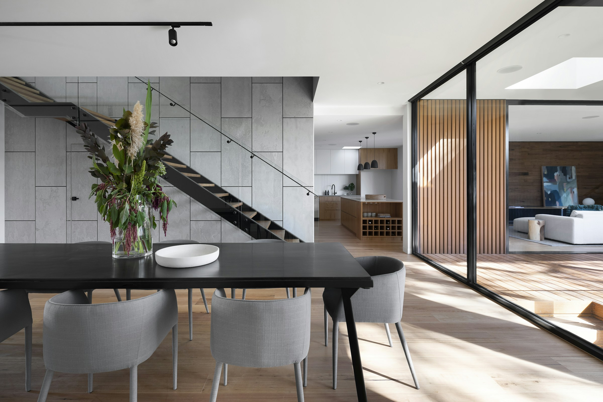
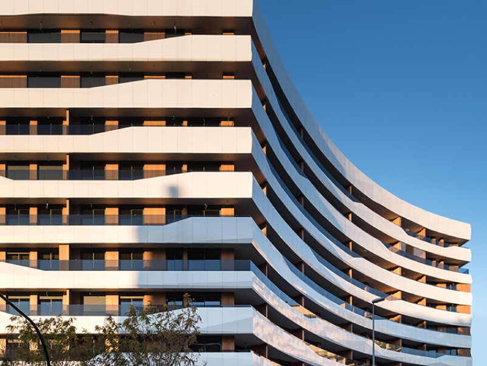

L’architecture.
En toute liberté.
Des lignes qui inspirent. Des espaces qui respirent.
L’aluminium STRUGAL donne vie à vos idées.
La précision industrielle.
L’émotion architecturale.
Une fenêtre ouvre bien plus qu’un espace. Elle laisse entrer la lumière, dessine une perspective et transforme notre façon d’habiter.
Depuis 1975, STRUGAL conçoit des solutions pour la construction et l’industrie. Au Maroc, nous accompagnons les professionnels et les particuliers pour donner forme à leurs projets.
Découvrez le groupe ↗ans d’expérience
pays de présence
professionnels engagés
À chaque vision,
sa solution.
Des systèmes conçus pour conjuguer
design, confort et performance.
Plus de lumière.
Moins de limites.
Fenêtres et baies coulissantes en aluminium : des lignes épurées pour ouvrir vos espaces et profiter pleinement de chaque perspective.
- Design & finesse des profilés
- Confort thermique & acoustique
- Solutions adaptées à votre projet
Votre ambition.
Notre savoir-faire.
De la première esquisse à la réalisation,
un accompagnement à votre mesure.
Architectes & prescripteurs
Conseil technique et ressources BIM pour donner corps à vos intentions architecturales.
Concevoir sans compromis ↗02Fabricants & installateurs
Des systèmes aluminium et un accompagnement technique pour vos chantiers.
Construire avec précision ↗03Particuliers
Fenêtres et portes qui allient esthétique et confort pour votre lieu de vie.
Imaginer votre intérieur ↗
Les belles idées
méritent de
prendre vie.
Découvrez l’univers architectural STRUGAL.
Des projets, des regards et de nouvelles perspectives.
La performance au service
d’un habitat plus durable.
Des matériaux durables, une politique de recyclage et des systèmes pensés pour l’efficacité énergétique : notre engagement se traduit dans les espaces que nous contribuons à créer.
Nos engagements ↗Votre projet
commence ici.
Une idée, une question, un projet ?
Échangez avec les équipes STRUGAL Maroc.